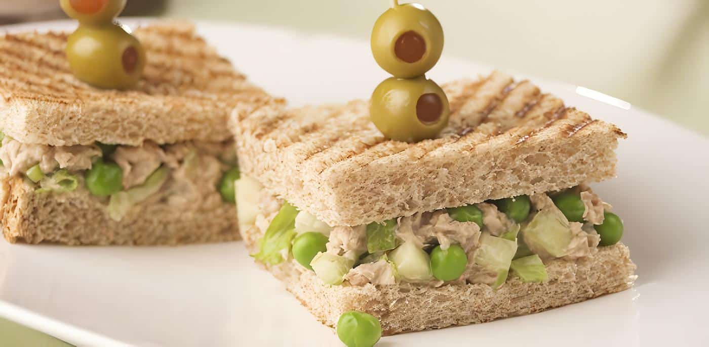
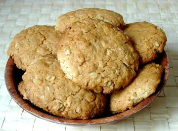
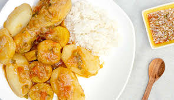

Recetas Deliciosas
¿Tienes mucha hambre y no quieres gastar mucho tiempo preparando alguna comida?
No te preocupes, a continuación te mostraremos 3 recetas deliciosas y faciles de hacer en cualquier momento
Sándwich de Atún y Manzana

Este sándwich de Atún y Manzana es la combinación perfecta entre lo cremoso y lo crujiente, lo salado y lo dulce.
Es ligero, nutritivo y lleno de sabor, haciendo de este una opción ideal para quienes buscan algo diferente, delicioso y saludable.
¿Cómo preparar este sándwich?
Galletas de Avena y Coco

Estas galletas de Coco y Avena son el equilibrio perfecto entre lo crujiente y lo suave.
Cada bocado está lleno de la dulzura natural del coco rallado y la textura irresistible de la avena,
creando una combinación que te hará sentir en casa.
¿Como preparar estas galletas?
Sudado de Pollo y Papa

Este sudado de Pollo y Papa es un plato lleno de tradición y sabor. Cocinado a fuego lento,
el pollo se impregna con un delicioso caldo lleno de especias y hierbas aromáticas,
mientras las papas absorben toda la esencia, quedando tiernas y llenas de sabor.
¿Como preparar este sudado?
¡Queremos saber tu opinión! Cuéntanos qué te parecieron nuestras recetas y cómo fue tu experiencia.